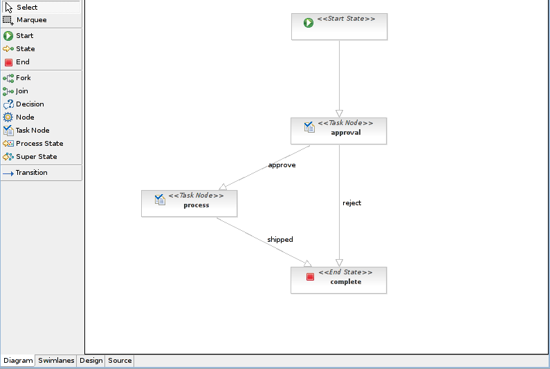
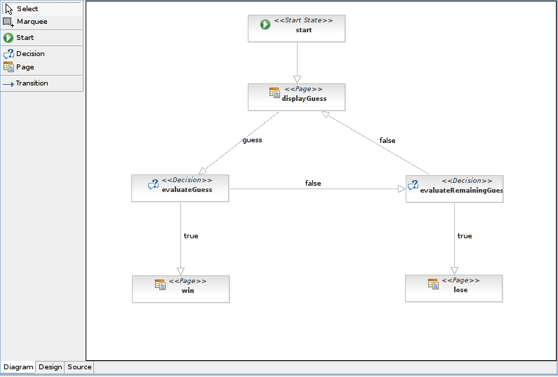

36.1. jBPM designer and viewer
The jBPM designer and viewer is included in JBoss Eclipse IDE, and lets you design and view business processes and pageflows aesthetically. Detailed usage information is located in the JBoss Developer Studio Seam Developer Tools Reference Guide available on
http://docs.redhat.com/docs/en-US/index.html.
36.1.1. Business process designer
This tool lets you design your own business process graphically.

This tool lets you build graphical representations of pageflows so that complex designs can be shared and compared easily.
